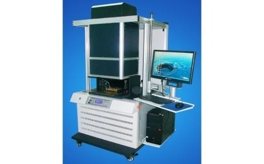

01
Solar Photovoltaic
Solar cells convert sunlight into electricity. Linked into modules and arrays, they power lighting, water pumping, communications (repeater and GSM stations, TV and radio), audio-visual aids and computers in schools, cathodic protection, battery charging, vaccine refrigeration and telemetry.
The Centre has facilities for monitoring the performance of PV components and systems, to make sure they meet international standards and perform well in the local environment. Alongside research on solar cell fabrication and performance, NCERD installs solar electricity systems for commercial and domestic users and runs intensive training on PV installation and maintenance for youth empowerment.
Unit head: Mrs. C.A. Nwanya
